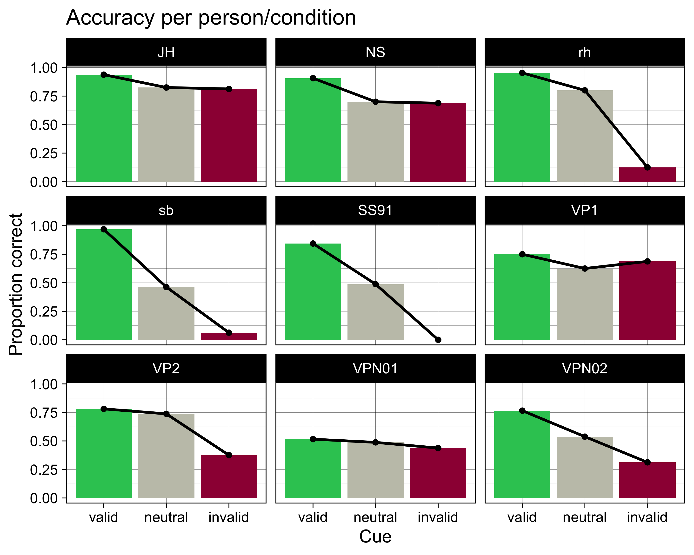

![]()
── Attaching core tidyverse packages ──────────────────────── tidyverse 2.0.0 ──
✔ dplyr 1.1.0 ✔ readr 2.1.4
✔ forcats 1.0.0 ✔ stringr 1.5.0
✔ ggplot2 3.4.1 ✔ tibble 3.1.8
✔ lubridate 1.9.2 ✔ tidyr 1.3.0
✔ purrr 1.0.1
── Conflicts ────────────────────────────────────────── tidyverse_conflicts() ──
✖ dplyr::filter() masks stats::filter()
✖ dplyr::lag() masks stats::lag()
ℹ Use the conflicted package (<http://conflicted.r-lib.org/>) to force all conflicts to become errorsDaten importieren: Teil 2
Mehrere Datensätze programmatisch bearbeiten.
Lernziele
In der heutigen Sitzung lernen wir:
- Arbeitsschritte automatisieren: mehrere Datensätze automatisch importieren
- Mit ChatGPT Code verstehen
Datacamp
- Falls Sie eine Einführung in Programmierkonzepte (Conditionals and Control Flow, Functions, Loops) benötigen, empfehlen wir Ihnen den Datacamp Kurs Intermediate R.
Mehrere Datensätze bearbeiten
Meist werden Daten für jede Versuchsperson einzeln abgespeichert. Um nicht jeden Datensatz einzeln einlesen zu müssen können wir Schleifen (loops) und Funktionen nutzen. Schleifen und Funktionen sind immer extrem zeitsparend, wenn ein Prozess wiederholt werden muss. Dies kommt in der Verarbeitung grosser Datensätze häufig vor. Zudem werden so Tippfehler vermieden, die häufig passieren, wenn man dreissig Mal dasselbe schreiben muss.
Nun werden wir dasselbe wie im Teil 1 machen; dort haben wir ein csv File importiert, und dessen Variablen ausgewählt und umbenannt. Dieses Mal wollen wir aber alle .csv Files laden, die in einem Ordner gespeichert sind.
Alle Files in einem Ordner auflisten
Zuerst erstellen wir mit list.files() eine Liste aller .csv Files im Ordner data.
datadir <- "data"
csv_files <- datadir |>
list.files(pattern = "csv", full.names = TRUE)csv_files[1] "data/JH_rdk-discrimination_2022_Mar_07_1403.csv"
[2] "data/NS_rdk-discrimination_2022_Mar_07_1331.csv"
[3] "data/rh_rdk-discrimination_2022_Mar_02_1105.csv"
[4] "data/sb_rdk-discrimination_2022_Mar_06_0746.csv"
[5] "data/SS91_rdk-discrimination_2022_Mar_06_0953.csv"
[6] "data/VP1_rdk-discrimination_2022_Mar_07_1237.csv"
[7] "data/VP2_rdk-discrimination_2022_Mar_07_1302.csv"
[8] "data/VPN01_rdk-discrimination_2022_Mar_01_2142.csv"
[9] "data/VPN02_rdk-discrimination_2022_Mar_01_2208.csv"csv_files enthält nun die “Pfade” zu allen .csv Files im Ordner data. Diese Pfade können nun einzeln and read_csv() übergeben werden.
Mit for-Loop
Zuerst brauchen wir eine Liste, in die wir die Daten einlesen können. Wir erstellen eine Liste mit der Länge der Anzahl Files, die wir haben.
Nun können wir entweder über die Elemente der Liste iterieren, oder über die Indizes. Wir wählen letzteres, da wir die Indizes später für die Zuweisung der Daten verwenden können.
Das Resultat ist eine Liste, in deren Elementen die neun csv Files gepesichert sind.
length(data_list)[1] 9Diese wollen wir nun zu einem Dataframe zusammenfügen. Dazu können wir do.call() verwenden. do.call() nimmt eine Funktion und eine Liste als Argumente. Die Liste werden wiederum als Argumente der Funktion verwendet.
data_loop <- do.call(rbind, data_list)head(data_loop)# A tibble: 6 × 40
cue direct…¹ pract…² pract…³ pract…⁴ pract…⁵ main_…⁶ main_…⁷ main_…⁸ main_…⁹
<chr> <chr> <dbl> <dbl> <dbl> <dbl> <dbl> <dbl> <dbl> <dbl>
1 none right 0 0 0 5 NA NA NA NA
2 left right 0 1 1 2 NA NA NA NA
3 right right 0 2 2 1 NA NA NA NA
4 left left 0 3 3 0 NA NA NA NA
5 none left 0 4 4 4 NA NA NA NA
6 right left 0 5 5 3 NA NA NA NA
# … with 30 more variables: static_isi.started <dbl>, static_isi.stopped <dbl>,
# fixation_pre.started <dbl>, fixation_pre.stopped <chr>,
# image.started <dbl>, image.stopped <chr>, fixation_post.started <dbl>,
# fixation_post.stopped <chr>, dots_background.started <dbl>,
# dots_background.stopped <chr>, dots_stimulus.started <dbl>,
# dots_stimulus.stopped <chr>, dots_keyboard_response.keys <chr>,
# dots_keyboard_response.started <dbl>, …Mit map und list_rbind
Dasselbe können wir auch mit map() machen. Da auch hier der Output eine Liste ist, müssen wir diese auch zu einem Dataframe zusammenfügen. Dazu können wir list_rbind() verwenden.
data <- csv_files |>
map(read_csv) |>
list_rbind()data |>
slice_head(n = 20)# A tibble: 20 × 40
cue direc…¹ pract…² pract…³ pract…⁴ pract…⁵ main_…⁶ main_…⁷ main_…⁸ main_…⁹
<chr> <chr> <dbl> <dbl> <dbl> <dbl> <dbl> <dbl> <dbl> <dbl>
1 none right 0 0 0 5 NA NA NA NA
2 left right 0 1 1 2 NA NA NA NA
3 right right 0 2 2 1 NA NA NA NA
4 left left 0 3 3 0 NA NA NA NA
5 none left 0 4 4 4 NA NA NA NA
6 right left 0 5 5 3 NA NA NA NA
7 <NA> <NA> NA NA NA NA NA NA NA NA
8 right right NA NA NA NA 0 0 0 18
9 right right NA NA NA NA 0 1 1 31
10 none right NA NA NA NA 0 2 2 66
11 none right NA NA NA NA 0 3 3 75
12 left left NA NA NA NA 0 4 4 13
13 none right NA NA NA NA 0 5 5 62
14 none left NA NA NA NA 0 6 6 41
15 left left NA NA NA NA 0 7 7 15
16 left right NA NA NA NA 0 8 8 32
17 none right NA NA NA NA 0 9 9 68
18 none left NA NA NA NA 0 10 10 40
19 left left NA NA NA NA 0 11 11 1
20 left left NA NA NA NA 0 12 12 3
# … with 30 more variables: static_isi.started <dbl>, static_isi.stopped <dbl>,
# fixation_pre.started <dbl>, fixation_pre.stopped <chr>,
# image.started <dbl>, image.stopped <chr>, fixation_post.started <dbl>,
# fixation_post.stopped <chr>, dots_background.started <dbl>,
# dots_background.stopped <chr>, dots_stimulus.started <dbl>,
# dots_stimulus.stopped <chr>, dots_keyboard_response.keys <chr>,
# dots_keyboard_response.started <dbl>, …Nun können wir wie in Teil 1 die Practice Trials entfernen.
Variablen auswählen und umbennen
Wir eliminieren die Variablen, die wir nicht brauchen (ISI, Fixationskreuz, Zeitangaben der Bilder, etc.).
Zum Schluss geben wir den Variablen, die wir behalten, noch deskriptivere Namen.
data <- data |>
select(trial = main_blocks_loop.thisN,
ID = Pseudonym,
cue,
direction,
response = dots_keyboard_response.keys,
rt = dots_keyboard_response.rt)data |>
slice_head(n = 20)# A tibble: 20 × 6
trial ID cue direction response rt
<dbl> <chr> <chr> <chr> <chr> <dbl>
1 0 JH right right j 0.714
2 1 JH right right j 0.627
3 2 JH none right f 0.670
4 3 JH none right j 0.574
5 4 JH left left j 0.841
6 5 JH none right j 0.668
7 6 JH none left j 1.12
8 7 JH left left f 0.640
9 8 JH left right f 1.13
10 9 JH none right j 1.03
11 10 JH none left f 1.35
12 11 JH left left f 0.688
13 12 JH left left f 0.721
14 13 JH none left f 0.655
15 14 JH right right j 1.02
16 15 JH none right j 1.12
17 16 JH left left f 1.08
18 17 JH right left f 0.643
19 18 JH right right j 0.716
20 19 JH left left f 0.578Neue Variablen definieren
Eine Antwort ist korrekt, wenn die gewählte Richtung der Richtung des Dot-Stimulus entspricht. Zuvor definieren wir zwei Variablen: choice besteht aus den Angaben “right” und “left”, response ist eine numerische Version davon (0 = “left”, 1 = “right”).
Korrekte Antworten
correct ist TRUE wenn choice == direction, FALSE wenn nicht. Wir konvertieren diese logische Variable mit as.numeric() in eine numerische Variable. as.numeric() konvertiert TRUE in 1 und FALSE in 0.
Lösung
as.numeric(c(TRUE, FALSE))[1] 1 0data <- data |>
mutate(correct = as.numeric(choice == direction))glimpse(data)Rows: 1,440
Columns: 8
$ trial <dbl> 0, 1, 2, 3, 4, 5, 6, 7, 8, 9, 10, 11, 12, 13, 14, 15, 16, 17…
$ ID <chr> "JH", "JH", "JH", "JH", "JH", "JH", "JH", "JH", "JH", "JH", …
$ cue <chr> "right", "right", "none", "none", "left", "none", "none", "l…
$ direction <chr> "right", "right", "right", "right", "left", "right", "left",…
$ response <dbl> 1, 1, 0, 1, 1, 1, 1, 0, 0, 1, 0, 0, 0, 0, 1, 1, 0, 0, 1, 0, …
$ rt <dbl> 0.7136441, 0.6271285, 0.6703410, 0.5738488, 0.8405913, 0.667…
$ choice <chr> "right", "right", "left", "right", "right", "right", "right"…
$ correct <dbl> 1, 1, 0, 1, 0, 1, 0, 1, 0, 1, 1, 1, 1, 1, 1, 1, 1, 1, 1, 1, …Wir schauen uns die ersten 20 Zeilen an.
data |>
slice_head(n = 20)# A tibble: 20 × 8
trial ID cue direction response rt choice correct
<dbl> <chr> <chr> <chr> <dbl> <dbl> <chr> <dbl>
1 0 JH right right 1 0.714 right 1
2 1 JH right right 1 0.627 right 1
3 2 JH none right 0 0.670 left 0
4 3 JH none right 1 0.574 right 1
5 4 JH left left 1 0.841 right 0
6 5 JH none right 1 0.668 right 1
7 6 JH none left 1 1.12 right 0
8 7 JH left left 0 0.640 left 1
9 8 JH left right 0 1.13 left 0
10 9 JH none right 1 1.03 right 1
11 10 JH none left 0 1.35 left 1
12 11 JH left left 0 0.688 left 1
13 12 JH left left 0 0.721 left 1
14 13 JH none left 0 0.655 left 1
15 14 JH right right 1 1.02 right 1
16 15 JH none right 1 1.12 right 1
17 16 JH left left 0 1.08 left 1
18 17 JH right left 0 0.643 left 1
19 18 JH right right 1 0.716 right 1
20 19 JH left left 0 0.578 left 1Cue-Bedingungsvariable
Nun brauchen wir eine Variable, die angibt, ob die Bedingung “neutral”, “valid” oder “invalid” ist. Wir erstellen eine neue Variable condition und füllen sie mit case_when() mit den Werten “neutral”, “valid” oder “invalid”. case_when() erlaubt, mehrere if_else()-Bedingungen zu kombinieren. So wird hier der Variablen condition der Wert neutral zugewiesen, wenn cue == "none" ist. Falls cue == direction ist, wird der Wert valid zugewiesen. Falls cue != direction ist, wird der Wert invalid zugewiesen.
data |>
slice_head(n = 20)# A tibble: 20 × 9
trial ID cue direction response rt choice correct condition
<dbl> <chr> <chr> <chr> <dbl> <dbl> <chr> <dbl> <chr>
1 0 JH right right 1 0.714 right 1 valid
2 1 JH right right 1 0.627 right 1 valid
3 2 JH none right 0 0.670 left 0 neutral
4 3 JH none right 1 0.574 right 1 neutral
5 4 JH left left 1 0.841 right 0 valid
6 5 JH none right 1 0.668 right 1 neutral
7 6 JH none left 1 1.12 right 0 neutral
8 7 JH left left 0 0.640 left 1 valid
9 8 JH left right 0 1.13 left 0 invalid
10 9 JH none right 1 1.03 right 1 neutral
11 10 JH none left 0 1.35 left 1 neutral
12 11 JH left left 0 0.688 left 1 valid
13 12 JH left left 0 0.721 left 1 valid
14 13 JH none left 0 0.655 left 1 neutral
15 14 JH right right 1 1.02 right 1 valid
16 15 JH none right 1 1.12 right 1 neutral
17 16 JH left left 0 1.08 left 1 valid
18 17 JH right left 0 0.643 left 1 invalid
19 18 JH right right 1 0.716 right 1 valid
20 19 JH left left 0 0.578 left 1 valid Daten als CSV speichern
An dieser Stelle speichern wir den neu kreierten Datensatz als .csv File in einen Ordner names data_clean. Somit können wir zu einem späteren Zeitpunkt die Daten einfach importieren, ohne die ganzen Schritte wiederholen zu müssen.
data |> write_csv(file = "data_clean/rdkdata.csv")Gruppierungsvariablen
Alle Gruppierungsvariablen sollten nun zu Faktoren konvertiert werden.
glimpse(data)Rows: 1,440
Columns: 9
$ trial <dbl> 0, 1, 2, 3, 4, 5, 6, 7, 8, 9, 10, 11, 12, 13, 14, 15, 16, 17…
$ ID <fct> JH, JH, JH, JH, JH, JH, JH, JH, JH, JH, JH, JH, JH, JH, JH, …
$ cue <fct> right, right, none, none, left, none, none, left, left, none…
$ direction <fct> right, right, right, right, left, right, left, left, right, …
$ response <dbl> 1, 1, 0, 1, 1, 1, 1, 0, 0, 1, 0, 0, 0, 0, 1, 1, 0, 0, 1, 0, …
$ rt <dbl> 0.7136441, 0.6271285, 0.6703410, 0.5738488, 0.8405913, 0.667…
$ choice <fct> right, right, left, right, right, right, right, left, left, …
$ correct <dbl> 1, 1, 0, 1, 0, 1, 0, 1, 0, 1, 1, 1, 1, 1, 1, 1, 1, 1, 1, 1, …
$ condition <fct> valid, valid, neutral, neutral, valid, neutral, neutral, val…Daten überprüfen
Wir überprüfen, ob die Daten korrekt sind. Dazu schauen wir uns die Anzahl der Trials pro Person und pro Bedingung an. Sie können mehr Zeilen anzeigen, indem sie n = in der Funktion slice_head() ändern.
data |>
group_by(ID, condition) |>
summarise(n_trials = n()) |>
slice_head(n = 20)`summarise()` has grouped output by 'ID'. You can override using the `.groups`
argument.# A tibble: 27 × 3
# Groups: ID [9]
ID condition n_trials
<fct> <fct> <int>
1 JH valid 64
2 JH neutral 80
3 JH invalid 16
4 NS valid 64
5 NS neutral 80
6 NS invalid 16
7 rh valid 64
8 rh neutral 80
9 rh invalid 16
10 sb valid 64
# … with 17 more rowsAccuracy pro Person/Bedingung
Nun berechnen wir pro Person und pro Bedingung die Anzahl der korrekten Antworten und die Accuracy. Die Accuracy ist die Anzahl der korrekten Antworten geteilt durch die Anzahl der Trials.
accuracy <- data |>
group_by(ID, condition) |>
summarise(N = n(),
ncorrect = sum(correct),
accuracy = mean(correct))`summarise()` has grouped output by 'ID'. You can override using the `.groups`
argument.accuracy# A tibble: 27 × 5
# Groups: ID [9]
ID condition N ncorrect accuracy
<fct> <fct> <int> <dbl> <dbl>
1 JH valid 64 60 0.938
2 JH neutral 80 66 0.825
3 JH invalid 16 13 0.812
4 NS valid 64 58 0.906
5 NS neutral 80 56 0.7
6 NS invalid 16 11 0.688
7 rh valid 64 61 0.953
8 rh neutral 80 64 0.8
9 rh invalid 16 2 0.125
10 sb valid 64 62 0.969
# … with 17 more rowsVisualisieren
accuracy |>
ggplot(aes(x = condition, y = accuracy, fill = condition)) +
geom_col() +
geom_line(aes(group = ID), linewidth = 2) +
geom_point(size = 4) +
scale_fill_manual(values = c(invalid = "#9E0142",
neutral = "#C4C4B7",
valid = "#2EC762")) +
labs(x = "Cue",
y = "Proportion correct",
title = "Accuracy per person/condition") +
facet_wrap(~ID) +
theme_linedraw(base_size = 28) +
theme(legend.position = "none")
Reuse
Citation
BibTeX citation:
@online{ellis2023,
author = {Andrew Ellis},
title = {Daten Importieren: {Teil} 2},
date = {2023-03-20},
url = {https://kogpsy.github.io/neuroscicomplabFS23//pages/chapters/importing_data-2.html},
langid = {en}
}
For attribution, please cite this work as:
Andrew Ellis. 2023. “Daten Importieren: Teil 2.” March 20,
2023. https://kogpsy.github.io/neuroscicomplabFS23//pages/chapters/importing_data-2.html.